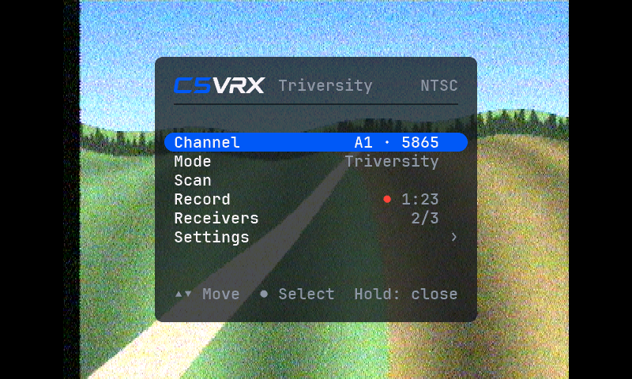
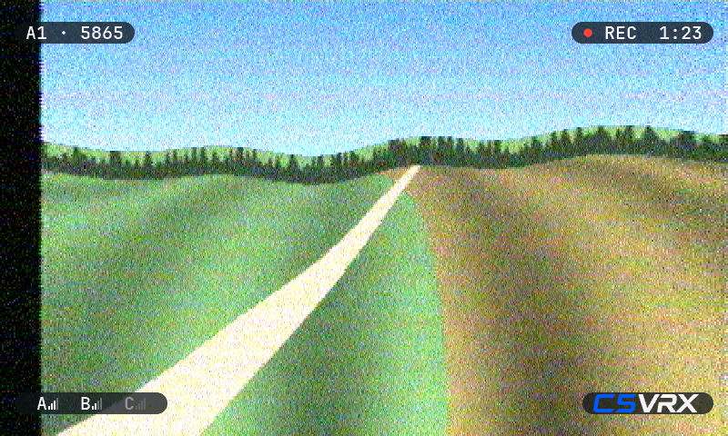
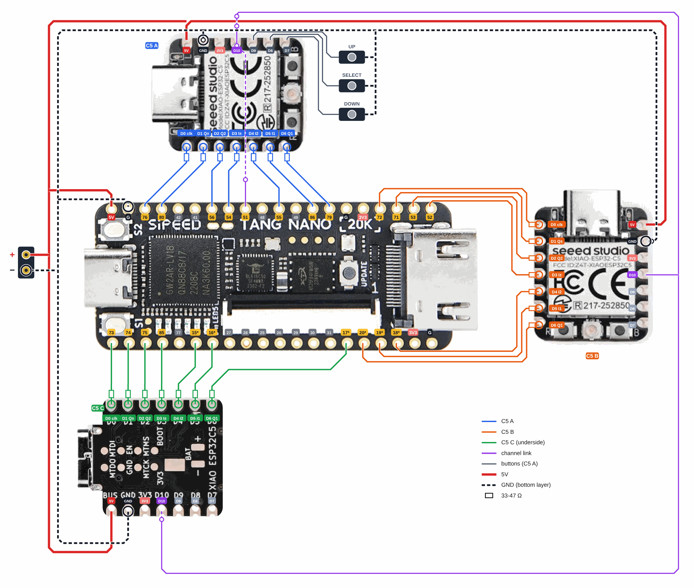
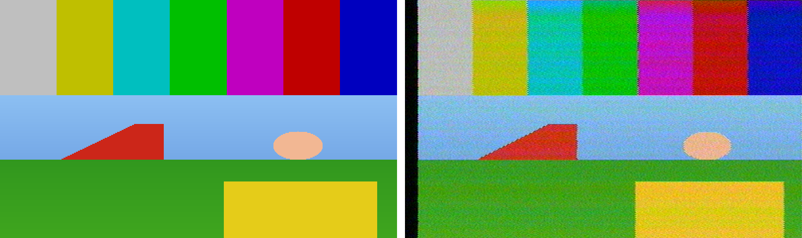

C5VRX Triversity: three receivers, one picture
Three XIAO ESP32-C5 receive the same 5.8 GHz analog FPV channel on their own antennas. A Sipeed Tang Nano 20K fuses their IQ before demodulation, decodes the colour and drives an 800x480 screen with an on-screen menu. An official C5VRX version.


Experimental receiver — safety & warranty
Triversity has not flown yet. Video can disappear without warning, and loss of FPV video can lead to a crash, property damage or serious injury. Do not rely on it as your only means of maintaining safe aircraft control.
Read the flight safety and warranty disclaimer
- Ground-test every firmware, bitstream and settings combination. Remove propellers for bench tests.
- Keep disruptive controls on the ground. Scanning, channel changes, calibration and mode changes can interrupt the picture. Do not flash in flight.
- A release or passing CI is not flight qualification. The design is verified in simulation; board tests are still to come.
No warranty: provided under GPL-3.0-only, including its warranty and liability provisions in sections 15–17, to the extent permitted by applicable law.
Web flasher
All three C5s get the same firmware; the wiring decides which is A, B or C. Flash them one after the other.
Drag & drop a firmware binary (.bin) here
or0x10000 for the application binary.
Advanced options
No device connected
Flash log
Connection help
Use a USB data cable to connect one XIAO ESP32-C5 at a time and choose its serial port when connecting.
A running Triversity C5 enters download mode by itself. If connecting still fails, hold BOOT, tap RESET, then release BOOT.
Close any other serial program first: only one program can use the port.
FPGA bitstream
The Tang Nano 20K is programmed over its own USB-C through the onboard BL616 debugger. Browsers cannot reach that debugger, so download the bitstream of the selected build and write it to the Tang's flash with openFPGALoader or the Gowin Programmer. One bitstream does it all: three C5s fused (Triversity), colour, the full menu and the HQ DVR (every field as a 720-wide colour JPEG to the TF card, buffered in the Tang's SDRAM).
openFPGALoader -b tangnano20k -f triversity.fs
Without -f openFPGALoader loads it until the next power-up only. Recordings: python tools/hqdvr_to_mp4.py TRIDVR.BIN rec.mp4.
Hardware
Three Seeed Studio XIAO ESP32-C5 with their antennas, a Sipeed Tang Nano 20K, a 5" 800x480 40-pin RGB LCD and three buttons on C5 A (Up, Select, Down). Each C5 plugs its left-side pads straight into the Tang's pins; one shared wire carries the channel and the settings back.

